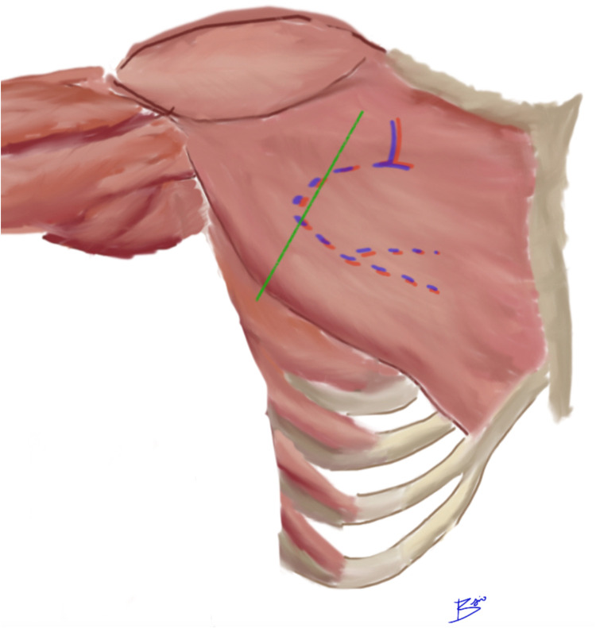

大胸筋（だいきょうきん＝胸の前面にある大きな筋肉）の一部と、その上をおおう胸の皮膚を、血流を保ったままひとかたまりで頭頸部（とうけいぶ＝頭と首）へ運ぶ「大胸筋皮弁（だいきょうきんひべん）」を報告した論文です。胸の皮膚を、大胸筋の細い一部と、その奥（深い面）を走る軸走神経血管束（じくそうしんけいけっかんそく＝皮弁を養う一本の太い血管と神経の束）に乗せて移すことで、大きな欠損を一度の手術で覆えるとしています。遊離皮弁（ゆうりひべん＝皮膚を血管ごと切り離し、顕微鏡下で移植先の血管に縫い直す皮弁）が普及する前後の時代に、頭頸部再建の主力（ワークホース＝日常的に最もよく使う働き者の皮弁）として広く用いられるようになった有茎皮弁（ゆうけいひべん＝血管の茎でつながったまま移す皮弁）の、代表的な原著とされます。
背景 ― 頭頸部の大きな欠損をどう覆うか
頭頸部（口の中・のど・顔面・首）のがんを大きく切除すると、粘膜・皮膚・ときに骨まで含む広い欠損が残ります。腱や骨、太い血管が露出したような血流の乏しい面は、植皮（しょくひ＝皮膚だけを移植する方法。それ自体に血流がなく移植先の血流に頼って生着する）では覆えず、血流を持った皮膚の塊＝皮弁（ひべん）で覆う必要があるとされます。
1970年代、頭頸部再建で代表的だったのはデルトペクトラル皮弁（三角筋胸筋皮弁＝鎖骨の下・胸の上部の皮膚を用いる有茎皮弁）でした。しかし遠い場所の皮膚を段階的に移すため、複数回の手術や途中の管理を要し、一度に運べる組織の量にも限りがあったとされます。
一度の手術で、厚みのある大きな組織を、確実な血流とともに頭頸部まで運べる方法が求められていた時期にあたります。
この論文がしたこと
著者Ariyanは、胸の前面の皮膚を、大胸筋の細い一部（narrow segment）に乗せ、その奥を走る軸走神経血管束ごと挙上する複合皮弁（compound flap＝皮膚と筋肉をひとまとめにして移す皮弁）を報告しました。皮膚だけでなく筋肉ごと運ぶため、筋皮弁（きんぴべん）に分類されます。
抄録では、この皮弁を用いて、連続する4例の患者で大きな欠損の再建に成功したと述べられています。そのうえで、著者らの経験からは、この皮弁は当時よく使われていたデルトペクトラル皮弁よりも versatile（応用がきく・汎用性が高い）かもしれない、と結論づけています。
抄録に書かれているのはここまでです。血管の具体的な名称や詳細な手術手技、生着率などの数値は抄録には示されていません。したがって本ページでも、以降の解剖・手技の説明は「原著抄録の記載」ではなく、その後一般化した知見として区別して記します。
解剖と手技の要点
ここから先は、原著の抄録には具体的な記載がないため、その後に整理されてきた一般的な解剖・手技の知見です。大胸筋皮弁の血流を支える軸走神経血管束は、胸肩峰動脈（きょうけんぽうどうみゃく＝腋窩動脈から分かれる動脈）の胸筋枝（きょうきんし）にあたるとされます。この血管は大胸筋の深い面（裏側）を、鎖骨の中央付近から胸の下方へ向かって走ります。
皮弁のデザインでは、鎖骨の中央付近（肩峰側）と剣状突起（けんじょうとっき＝みぞおちの中央にある胸骨下端の突起）を結んだ線を目安にします。この線に沿って血管が走ると考え、皮膚の島（皮膚を残す部分）をその上に置くように設計するのが一般的とされます。
挙上した皮弁は、鎖骨の下（皮膚の橋の下）をくぐらせて首から上へ運びます。血管の茎（けい＝皮弁がつながったまま回転する軸）が長く、支点が鎖骨付近にあるため、有茎のまま口の中・のど・顔面など頭頸部の広い範囲へ届くとされます。

結果
この論文の抄録が報告する成績は、連続する4例の患者で大きな欠損の再建に成功した、という点です。生着率などの具体的な数値は抄録には示されていないため、本ページでも成績に関する数値は記載しません。
抄録から確認できる要点は2つです。第一に、胸の皮膚を大胸筋の細い一部と、その奥の軸走神経血管束に乗せて運ぶ複合皮弁（筋皮弁）であること。第二に、著者らの経験では、当時主流だったデルトペクトラル皮弁よりも汎用性が高い可能性がある、と感じられたことです。
意義 ― なぜ「ワークホース」になったのか
この報告は、大胸筋皮弁を頭頸部再建に応用した代表的な原著として広く引用されており、その後この皮弁は頭頸部再建の主力（ワークホース＝働き者の馬、日常的に最もよく使う皮弁の意）として定着したとされます。
評価された理由は、血流が確実で挙上が比較的容易なこと、一度の手術で厚みのある大きな組織を運べること、露出した太い血管（頸動脈など）を筋肉で保護できること、などです。マイクロサージャリー（顕微鏡下で血管を縫い合わせる手術）の設備や技術がなくても行える点も、大きな利点とされます。
1980年代から1990年代初頭、遊離皮弁（マイクロサージャリーによる皮弁）が普及する前は、頭頸部がん切除後の再建の第一選択とされました。遊離皮弁が広く行われるようになった現在でも、遊離皮弁が使えない状況や、露出した血管の保護・再手術（サルベージ＝救済）の場面で、信頼できる有茎皮弁として今も使われ続けているとされます。
この論文の要点
- 胸の皮膚を、大胸筋の細い一部とその奥の軸走神経血管束に乗せて運ぶ複合皮弁（筋皮弁）を、頭頸部再建に応用して報告した。
- 抄録では、連続する4例の患者で大きな欠損の再建に成功したとされる（生着率などの数値は抄録に記載なし）。
- 著者らの経験では、当時主流だったデルトペクトラル皮弁よりも汎用性が高い可能性があると結論された。
- 血流を支える軸走神経血管束は、のちに胸肩峰動脈の胸筋枝と整理され、大胸筋の裏面を鎖骨中央〜剣状突起の方向へ走るとされる。
- 血管の茎が長く支点が鎖骨付近にあるため、有茎のまま頭頸部の広い範囲へ一度の手術で届く。
- マイクロサージャリー（遊離皮弁）が普及する前後の頭頸部再建の主力（ワークホース）有茎皮弁として定着した。
用語ミニ辞典
- 大胸筋皮弁（ペクトラリス皮弁）
- 胸の前面にある大胸筋の一部と、その上の胸の皮膚を、深い面を走る血管ごとひとかたまりで移す筋皮弁。pectoralis major myocutaneous flap の日本語名。頭頸部再建で最もよく使われた有茎皮弁のひとつ。
- 筋皮弁（きんぴべん）
- 筋肉と、その上の皮膚をひとかたまりにして移す皮弁。皮膚だけを移す皮弁より血流が安定するが、筋肉を犠牲にする。大胸筋皮弁もこれにあたる。
- 胸肩峰動脈 / 胸筋枝
- 胸肩峰動脈は腋窩（わきの下）の動脈から分かれる動脈。その胸筋枝が大胸筋の深い面を走り、大胸筋皮弁を養う血管の茎（軸走神経血管束）にあたるとされる。
- 軸走（型）皮弁 / 軸走神経血管束
- 皮弁の中を一本の決まった動脈・静脈（と神経）が芯のように貫くタイプの皮弁を軸走型皮弁という。その芯となる血管と神経の束が軸走神経血管束で、血流が確実で長い茎を取りやすい。
- デルトペクトラル皮弁
- 鎖骨の下・胸の上部の皮膚を用いる有茎皮弁（三角筋胸筋皮弁）。1970年代の頭頸部再建の代表的な選択肢で、原著はこの皮弁との比較で大胸筋皮弁の汎用性を論じている。
- 有茎皮弁 / 遊離皮弁
- 有茎皮弁は血管の茎でつながったまま近くへ移す皮弁。遊離皮弁は血管ごと切り離し、顕微鏡下で移植先の血管に縫い直す皮弁。大胸筋皮弁は有茎皮弁である。
- ワークホース
- 「働き者の馬」の意で、日常的に最もよく使う主力の術式・皮弁を指す言い方。大胸筋皮弁は長く頭頸部再建のワークホースとされてきた。
- 剣状突起（けんじょうとっき）
- みぞおちの中央にある、胸骨の下端の突起。肩峰側とここを結んだ線が、大胸筋皮弁の血管の走行を探す目安になるとされる。
本ページは形成外科の学習・参照を目的とした編集部によるオリジナルの日本語解説で、原著（英語）の逐語訳・全文転載ではありません。正確な内容・数値・図は必ず上記リンク先の原著をご確認ください。
掲載している図は、原著の図ではありません。原著の図は出版社が著作権を持ち転載できないため、同じ術式・同じ解剖を扱った無料公開（オープンアクセス／CC BY）論文の図を、出典とライセンスを明記して引用しています。